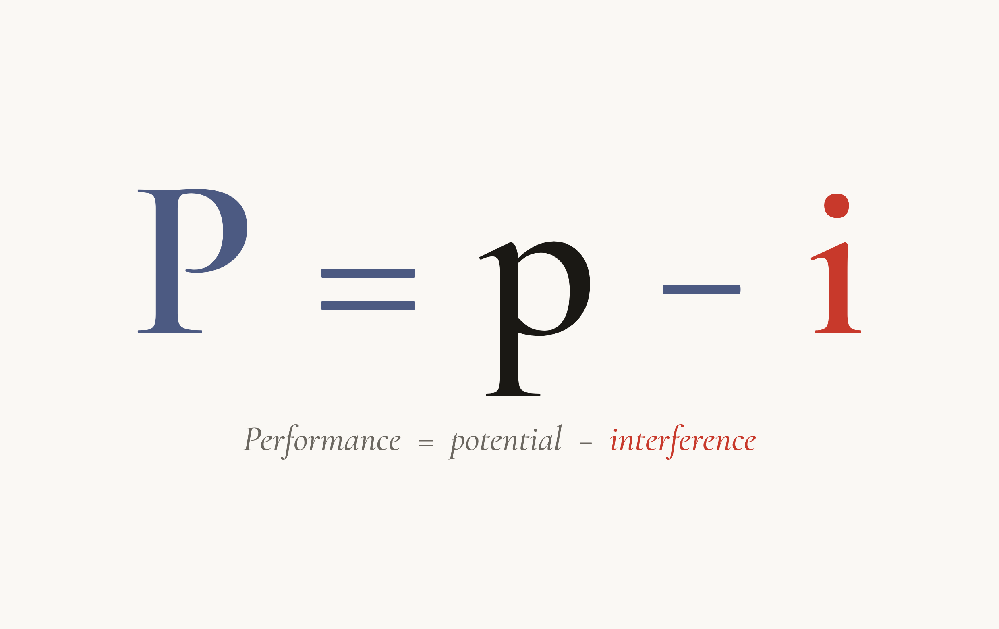
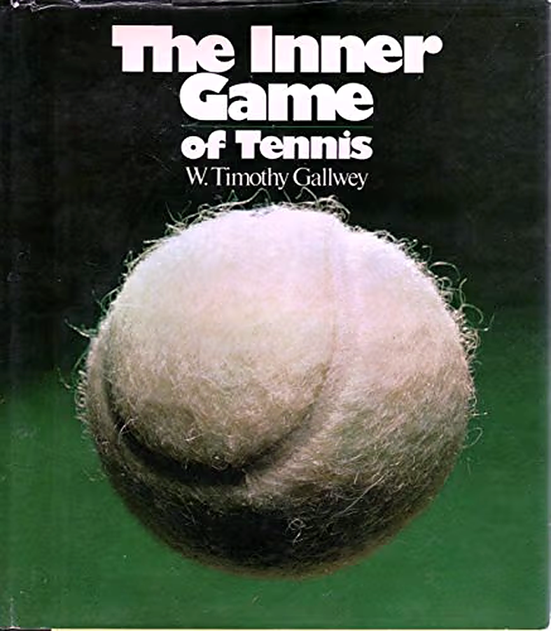
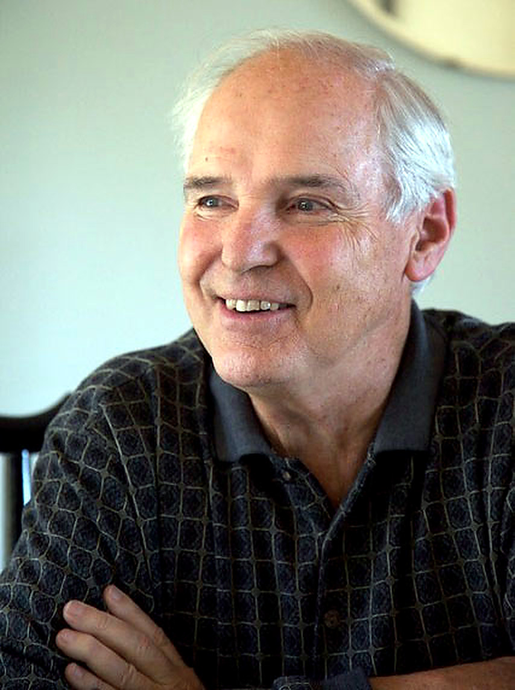
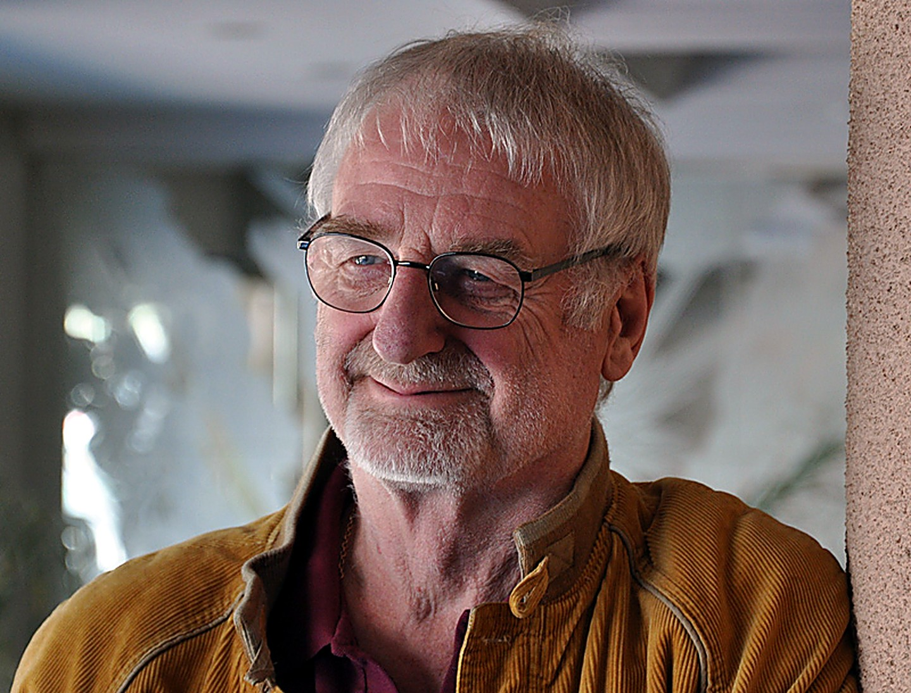
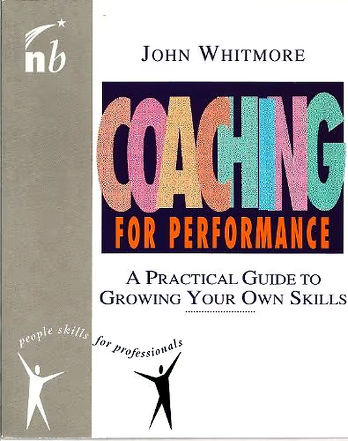

Foreword to Part I
This is the story of (business) coaching. It started about fifty years ago in the early 70s. It became a named profession in the early 90s, with a shared vocabulary, training schools, a credential ladder, and a code of ethics.
Today, coaching is familiar territory in most business environments. A company or senior leader who hires a coach is accessing a credible resource. Methodologies and certification bodies provide frameworks and standards by which coaching can be explained and understood, and anyone looking to hire a coach finds ample resources to assist him in making a decision.
This article is written in 3 parts. It tells the story of the people and the institutions that built coaching from its origins and grew it from an idea into an established profession and industry.
The first part is about how coaching was invented; the second is about how it became established and gained momentum; and the third is an exploration of its potential futures.

#1 Before there was a name
Before 1970 there was no coaching in the area of business. There was no profession or category for it. What did exist was a set of older, separate traditions, each with their own frames, capabilities and applications.
Business consulting was the established way to fix an organisation’s problems. McKinsey had been founded in 1926, and the consulting frame was diagnostic and directive: an expert names the problem and provides the solution. Psychotherapy, descended from Freud, worked on the individual through a medical model: identify the pathology, treat it. Sports coaching, older still, was about performance: drill the skill, train the body. The self-help genre reached mass audiences through books and lectures, from Dale Carnegie’s How to Win Friends and Influence People (1936) to Napoleon Hill’s Think and Grow Rich (1937). And mentorship existed everywhere inside organisations, informal and unpaid.
All of these disciplines relied on foundations of knowledge mediated by experts and authorities. None of them treated the person in front of them as their own expert. This is coaching’s unique contribution. The idea that the answers to a client’s challenges would originate with him, and that a practitioner’s job was to draw them out, had never before been assembled and articulated. While the ingredients were already on the table, nobody had arranged and coordinated them into a functioning whole.
#2 The Birth of the Idea
The discovery of business coaching is widely accredited to Timothy Gallwey. A Harvard-educated tennis coach, Gallwey published The Inner Game of Tennis in 1974 and made a claim that is widely accepted today, but was radical then: the real opponent is not the player on the other side of the net, but the voice inside your own head. This is the seed, the origin, of today’s coaching industry. If we are to understand anything about coaching, it is important to understand the significance and the impact of this seminal idea, evidenced by everything that came after it. While many peers and contemporaries of Gallwey may have engaged and participated, consciously or not, in the discovery of this idea, it is Gallwey who articulated and popularised it.

According to Gallwey, there is an inner game and an outer game; while skills and athletic ability could be developed, there is an inner reservoir of untapped potential that is unleashed when we release the inner interference, the negative conversation we have with ourselves, that’s playing somewhere in the background. Performance improves less by instruction; it is by reducing the player’s ‘internal interference’ that greater gains in performance can be realised.
When we separate tennis from the equation, it is relatively easy to understand how this idea generalises. It can be applied to almost anything a person is trying to do well, as evidenced by the subsequent work and series of ‘inner game’ books developed by Gallwey in the ensuing decades. And so it is the generalisation, the distributed application, of the ‘inner game’ idea that drove the modern coaching revolution.
#3 Where coaching originated
While we attribute the discovery and articulation of the inner game to Tim Gallwey, it is relevant to take a look at the environment in which he lived and worked, and the people who learned from him. From this bigger picture perspective, both the United States and Britain figure prominently, and Tim Gallwey’s idea attracted a number of people to it.

The epicenter was the human-potential movement, and the center of that, in turn, was The Esalen Institute in California. Through the late 60s and 70s, Encounter groups, Gestalt therapy, and the arrival of Eastern philosophy in California, had provided the foundations for the personal transformation movement –outside of the medical and religious contexts– and Esalen was the intellectual and spiritual hub where these new ideas and practices were converging – and arguably became the poster child of the era. Into this new context came Werner Erhard’s est, launched in 1971, which put more than two million people through intensive weekend seminars. While est was not coaching, it is widely understood as having built the cultural muscle for it, and also trained a generation of practitioners, among whom was Thomas Leonard, who would go on to found the first coach-training school and certification body.
The British origins can be traced to Sir John Whitmore, who had read about Esalen in a magazine, and first visited it in 1969. While Gallwey was a tennis coach, Whitmore had raced cars, and quite successfully. While in the United States Whitmore met Gallwey, and upon learning his method, began to apply it and experiment with it. It is valuable to note the parallels: both Gallwey and Whitmore came from a sports environment, where the inner game mattered and greatly improved the odds of winning; in Whitmore’s case, the inner game was also a matter of life and death, as racing cars in the 50s and 60s was an extremely dangerous sport where even a marginal difference mattered.
In 1979, Whitmore founded an operation in London called The Inner Game. His team was trained by Gallwey himself, working first with Tennis and Skiing. The move into business occurred in Britain with IBM. A training manager participated in the Inner Game tennis course and recognised that it could apply to business leadership; he subsequently invited Whitmore’s team to run an Inner Game module during a week-long IBM managerial course. The success of the first IBM program marked the pivotal moment when coaching transitioned from sports to business.

It is likely that similar trajectories existed elsewhere and in other countries outside of this trajectory. What is documented points to these English language origins, to an idea that grew out of the rampant social changes of the 50s and 60s, that found its first expression in the world of sports, and that found its way from there into the world of business.
#4 The beginnings of the profession
For most of the 1980s coaching stayed marginal in both markets — a few thousand practitioners at most, concentrated in California, New York, London and a handful of corporate training programmes. Outside those circles it was regarded with suspicion, too close to est and the perceived excesses of what had been called the “me decade.” Within the growing circle of practitioners the new discovery continued to evolve. The earliest coaches were Baby Boomers, and coaching clearly reflected their preoccupations: meaning, authenticity, self-actualisation.
In the early 1990s, in what appeared to be a remarkably tight time window, the practice began to acquire the apparatus of a profession. Thomas Leonard founded Coach U in the US in 1992. This was the first dedicated coach-training school, run at first from his own home and then quickly migrating onto telephone conference calls. This further innovation took coach-training to a national scale and allowed it to grow more rapidly. That same year, Laura Whitworth and Henry Kimsey-House founded the Coaches Training Institute (CTI), the first in-person professional training programme.
A number of important books also appeared: John Whitmore published Coaching for Performance: A Practical Guide to Growing Your Own Skills in 1992, introducing the GROW model, which he co-developed during the 80s with Graham Alexander and Alan Fine. Whitworth, Kimsey-House and Phil Sandahl co-authored Co-Active Coaching, which was first published in 1998. Timothy Gallwey released The Inner Game of Work in 1999.

The establishment of training schools and the publishing of seminal books was accompanied by the foundation of professional bodies. In 1995 Leonard co-founded the International Coach Federation together with Whitmore, Whitworth and others, giving the field a professional body, a code of ethics and the beginnings of a formal credential. Britain professionalised in the same window — the European Mentoring Centre was founded in 1992 (later rebranded as the EMCC) by two leading academics, Professors David Clutterbuck and David Megginson. In under a decade, on both sides of the Atlantic, coaching had progressed from a thing some people did to a profession you could be trained and certified for.
Despite the scaffolding that now existed, a number of things had not changed: to most people, being coached still meant that someone thought you had a problem. While the profession had been built, it was only just beginning to emerge from the margins, and was yet to gain the respect and recognition it enjoys today.